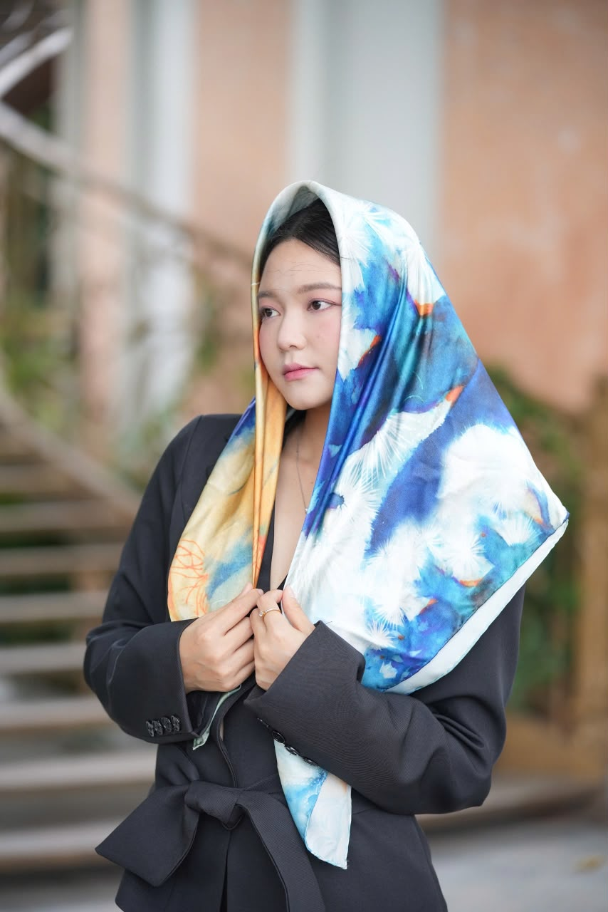

LUMIERE ARTS
Vùng Sống 2
Nguyễn Văn Trinh
Màu nước trên lụa
100 × 200 cm · 2023
Từ một phần nguyên tác,
một hành trình mới trên lụa.


LUMIERE ARTS
Từ không gian nghệ thuật…
Tư liệu triển lãm bộ Vùng Sống
LUMIERE ARTS
…đến từng thước lụa.
LUMIERE ARTS
Họa tiết được in lên lụa,
tiếp nối sắc màu của tranh.
LUMIERE ARTS
Một chi tiết.
Chuyển thể từ một phần Vùng Sống 2
LUMIERE ARTS
VÙNG SỐNG 2
Nhiều diện mạo.
LUMIERE ARTS
Nghệ thuật
để mang theo.
100% lụa tơ tằm Bảo Lộc
Satin 16 momme · Viền thủ công

The Art
of Silk
Vùng Sống 2
lumierearts.com